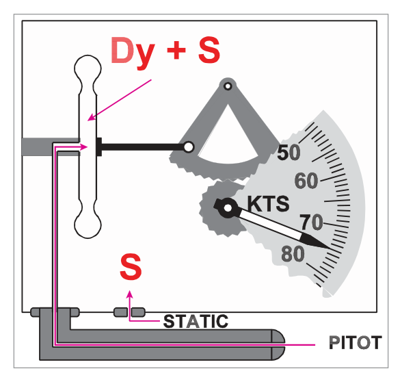
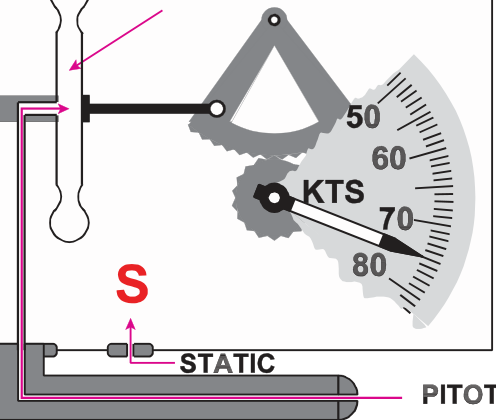
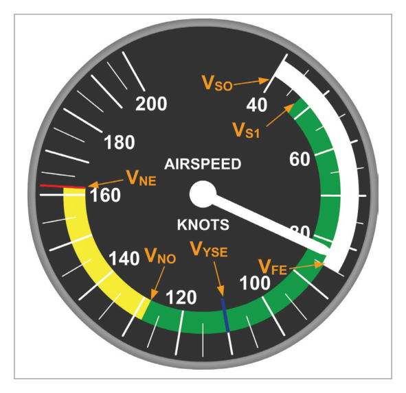

What this section covers: The physical principle behind the ASI — measurement of dynamic pressure to indicate airspeed.
An aircraft on the ground in still air experiences only static (atmospheric) pressure. In flight, the leading edges of the aircraft are subject to an additional dynamic pressure due to relative motion through the air. The pitot head senses the total (pitot) pressure; the static vent senses static pressure only.
The ASI is a differential pressure gauge that measures the difference between pitot and static pressures (i.e. dynamic pressure), displaying the result in knots on a calibrated scale. (1 knot = 1 nautical mile per hour.)
Exam Tip: The ASI measures dynamic pressure, not speed directly. Dynamic pressure = ½ρV². Because density ρ varies with altitude and temperature, the ASI does not directly indicate True Airspeed except at ISA MSL conditions.
2. Construction
What this section covers: The mechanical layout of the ASI and how it isolates dynamic pressure.
Static pressure is fed into a hermetically-sealed instrument case. Pitot pressure is piped to a thin metal capsule inside the case capable of expansion and contraction.

Functional ASI — pitot pressure to capsule, static pressure fills the case. Source p.42.
Static pressure acts on both the inside of the case and the outside of the capsule walls, so it cancels. The pressure differential across the capsule wall is therefore:
(Dynamic + Static) − Static = Dynamic only
Capsule expansion/contraction is proportional to changes in dynamic pressure (= changes in airspeed). The movements are transmitted via a temperature-compensated magnifying linkage to the pointer on the ASI face.

ASI capsule detail. Source p.42.
3. Calibration
What this section covers: The calibration standard for the ASI and why this creates errors at all other conditions.
Dynamic pressure depends on both speed and air density. Density varies with temperature and pressure, and therefore with altitude. The ASI is calibrated to read True Airspeed for the ISA MSL conditions only:
Calibration Condition
Value
Air density
1225 g/m³
Pressure
1013.25 hPa
Temperature
+15°C
Humidity
Dry air
No allowance is made for the change in density with altitude. Flight at any condition other than ISA MSL therefore introduces errors. The ASI accuracy tolerance (CS-25) is ± 3% or 5 kt, whichever is greater.
4. ASI Errors & Airspeed Definitions
What this section covers: Every source of error in the ASI, and the corresponding corrected airspeed definitions — IAS, CAS, EAS, TAS.
4.1 Indicated Airspeed (IAS)
The reading directly off the instrument face. Affected by all errors below.
4.2 Instrument Error
Manufacturing imperfections and wear cause small errors determined under laboratory conditions using a datum instrument. A correction card is produced for the speed range of the instrument and placed near the ASI in the cockpit.
4.3 Position Error (Pressure Error)
Arises mainly from sensing incorrect static pressure due to the probe’s location on the aircraft. Position errors vary across the speed range and are determined during the manufacturer’s flight test programme. In practice, a combined Instrument + Position Error correction card is used.
4.4 Manoeuvre-Induced Error
Associated with changes in angle of attack, producing transient errors and lag in airspeed indication. Primarily affects rapidly changing flight conditions.
4.5 Calibrated Airspeed (CAS)
CAS = IAS corrected for Instrument Error and Position (Pressure) Error.
Also historically known as Rectified Airspeed (RAS) (no longer in general use, but may appear on the Pooley CRP-5).
Example: If combined correction is +2 kt and pilot wants 100 kt CAS, fly at 98 kt IAS.
Why CAS matters: Aircraft stress limits and stall speeds are functions of dynamic pressure. Because the ASI is calibrated in “knots” (true only at ISA MSL), CAS provides a consistent measure of dynamic pressure regardless of altitude and density. Stall and structural limit speeds are expressed as CAS/IAS values.
4.6 Density Error
At altitudes above MSL, air density is less than 1225 g/m³ (the calibration density). Less dense air produces less dynamic pressure for the same TAS. The capsule expands less, and the ASI under-reads the true speed. If density is greater than ISA at MSL, the ASI over-reads.
EAS + Density Correction = TAS
4.7 Compressibility Error
Air is compressible; at speed the pressure in the pitot tube is higher than for an ideal incompressible fluid (for which dynamic pressure = ½ρV²). The ASI is calibrated for compressible flow at ISA MSL density. At lower densities (higher altitude), the standard compressibility correction becomes incorrect and the instrument over-reads (IAS and CAS too high). A subtractive compressibility correction must be applied.
Threshold: If TAS is less than 300 knots, compressibility error is small enough to be ignored in the IAS-to-TAS calculation.
4.8 Equivalent Airspeed (EAS)
EAS = CAS corrected for Compressibility Error only. EAS is the most accurate measure of dynamic pressure over the wing. All structural limit speeds are calculated from EAS; errors are then re-introduced to display them as IAS. At constant weight, an aircraft always lifts off at a constant EAS regardless of altitude.
In practice the difference between EAS and CAS is not large unless altitude is significant. However, at high-elevation airports with high-performance aircraft, CAS (and IAS) will be higher than EAS for the same dynamic pressure condition.
4.9 True Airspeed (TAS)
TAS = EAS corrected for Density Error. TAS is the actual speed of the aircraft relative to the surrounding air mass. It is the speed used for navigation and flight planning.
Density must be calculated from pressure (altitude) and temperature together — there is no direct density instrument. The navigational computer combines altitude and temperature to derive the density correction. The major factor is the pressure value.
Note: Calculation of airspeed errors using a navigation computer is NOT required for the Instrumentation EASA/DGCA exam. Full details are in Oxford ATPL Book 10 (General Navigation, Chapter 6).
5. Airspeed Correction Sequence — IAS to TAS
What this section covers: The step-by-step correction chain from raw instrument reading to True Airspeed.
flowchart LR
A["IAS\n(Indicated Airspeed)\nRaw instrument reading"] -->|"+ Instrument Error\n+ Position Error"| B["CAS\n(Calibrated Airspeed)"]
B -->|"+ Compressibility\nCorrection"| C["EAS\n(Equivalent Airspeed)"]
C -->|"+ Density\nCorrection"| D["TAS\n(True Airspeed)"]
style A fill:#e8f1fb
style B fill:#e8f1fb
style C fill:#e8f5e9
style D fill:#e8f5e9
Practical Sequence (Exam Rule):
Apply Density Error correction first → gives TAS.
If TAS ≤ 300 kt: no compressibility correction needed. STOP.
If TAS > 300 kt: apply Compressibility Error correction as well.
6. Limiting Speeds & ASI Colour Coding
What this section covers: The standard speed definitions shown on and around the ASI, and the colour arc/line coding system.
Best rate of climb with one engine inoperative, max weight, MSL
VLO
Max Gear Operation Speed
Not on ASI
Max speed for extending or retracting gear
VLE
Max Speed with Gear Extended
Not on ASI
Max speed with gear down and locked
6.2 Colour Arc Coding

Coloured range markings on the ASI dial. Source p.46.
Colour
Range
Meaning
White Arc
VS0 to VFE
Flap operating range. Safe to extend flaps within this arc.
Green Arc
VS1 to VNO
Normal operating range. Safe in all conditions including turbulence.
Yellow Arc
VNO to VNE
Caution range. Operate in smooth air only.
Red Radial Line
VNE
Never exceed speed — absolute limit.
Blue Radial Line
VYSE
Optional. Best single-engine rate-of-climb speed (piston twins).
Caution Range (Yellow Arc): Operations in the yellow arc must be conducted in smooth air only. Turbulence encountered at yellow arc speeds could cause structural damage.
7. Pitot and Static Blockages
What this section covers: The effect of pitot head blockage and static vent blockage on ASI indications, with the PUDSOD mnemonic.
7.1 Pitot Head Blockage
If the pitot head becomes blocked (typically by ice or insects), the pressure locked inside the capsule remains constant.
Level flight: Any change in airspeed will not be registered — the ASI freezes at its last reading.
Climb with blocked pitot: Static pressure around the capsule decreases (as altitude increases). With pitot locked, (pitot − static) increases → ASI over-reads. IAS increases during a climb.
Descent with blocked pitot: Static pressure increases. With pitot locked, (pitot − static) decreases → ASI under-reads. IAS decreases during a descent.
Blocked Pitot: Under-reads in Descent (PUDSOD — Pitot Under-reads in Descent)
Special case: If both the ram air input AND the drain hole are blocked (static port open), the locked pitot pressure causes the ASI to react like an altimeter — reading increases during a climb and decreases during a descent.
7.2 Static Head/Vent Blockage
A blocked static source freezes the static pressure at the value existing when the blockage occurred.
Descent with blocked static: True external static pressure is higher than the frozen value. The capsule experiences (pitot − locked lower static) → larger differential → ASI over-reads. Dangerous: aircraft is closer to stall than indicated.
Climb with blocked static: True external static pressure is lower than the frozen value. ASI under-reads.
Blocked Static: Over-reads in Descent (SOD — Static Over-reads in Descent)
If the alternative static source is selected, an error due to position error may occur. Turbulence effects usually result in higher static pressure at the alternate source, causing an under-reading. This error is documented in the Flight Manual.
PUDSOD Mnemonic: Pitot blocked: Under-reads in Descent Static blocked: Over-reads in Descent
flowchart TD
A["Blockage\nDetected?"] -->|Pitot| B["During Climb?\nASI over-reads\n(IAS rises)"]
A -->|Pitot| C["During Descent?\nASI under-reads\n(IAS falls) ⚠"]
A -->|Static| D["During Climb?\nASI under-reads\n(IAS falls)"]
A -->|Static| E["During Descent?\nASI over-reads\n(IAS rises) ⚠ DANGER"]
style E fill:#fdecea
style C fill:#fff8e1
8. Pitot and Static Leaks
What this section covers: The effect of leaks (as distinct from blockages) in the pitot and static lines.
8.1 Pitot Leak
A leak in the pitot line causes loss of dynamic pressure → ASI under-reads.
8.2 Static Leak — Unpressurised Aircraft
In an unpressurised aircraft, if the static leak occurs where the outside pressure is lower than the sensed static pressure (almost always the case aerodynamically), a false lower pressure is sensed around the capsule. The differential (pitot − leaked static) increases → ASI over-reads (usually not significantly).
8.3 Static Leak — Pressurised Aircraft
Hazard: If the static leak occurs within the pressure compartment of a pressurised aircraft, the (higher) cabin pressure is sensed as static pressure. This usually renders the ASI useless, as cabin altitude is significantly different from aircraft altitude.
9. Serviceability Checks
What this section covers: Pre-flight checks for the ASI and associated pressure systems.
Pre-Flight ASI Checks:
Pressure head cover(s) and static vent plug(s) removed and stowed aboard.
Pitot tube(s), holes/slots in static head(s) and static vent(s) checked free from obvious obstructions (insects, debris).
Pitot head heater operative (if fitted).
Dial glass clean and undamaged.
Instrument should indicate airspeed in the correct sense shortly after starting the take-off run.
Quick Revision Summary — Chapter 4:
ASI measures dynamic pressure = ½ρV² = pitot − static. Calibrated for ISA MSL: 1225 g/m³, 1013.25 hPa, +15°C.
ASI accuracy tolerance (CS-25): ±3% or 5 kt, whichever is greater.
Correction chain: IAS → (instrument + position error) → CAS → (compressibility) → EAS → (density) → TAS.
If TAS ≤ 300 kt: compressibility correction not needed.
Stall/stress limits are functions of dynamic pressure → expressed as CAS/IAS values.
At constant weight, aircraft always lifts off at constant EAS regardless of altitude.
Colour arcs: White = flap range (VS0–VFE); Green = normal ops (VS1–VNO); Yellow = caution (VNO–VNE); Red line = VNE; Blue line = VYSE (piston twins).
PUDSOD: Pitot blocked → Under-reads in Descent; Static blocked → Over-reads in Descent.
Q1.A leak in the pitot total pressure line of a non-pressurized aircraft to an airspeed indicator would cause it to:
Over-read in a climb and under-read in a descent
Over-read
Under-read in a climb and over-read in a descent
Under-read
Correct Answer: (d) Under-read
Explanation: A leak in the pitot line causes loss of dynamic pressure reaching the capsule. With lower pressure on the inside of the capsule, the differential (pitot − static) is reduced. The capsule expands less → ASI under-reads regardless of flight phase. See Section 8.
Why the other options are wrong:
(a) and (c) These describe effects of blockages, not leaks. A leak consistently reduces dynamic pressure; it does not alternate with flight phase.
(b) Over-reading occurs with a static leak in an unpressurised aircraft, not a pitot leak.
Instructor’s Note: Distinction: Pitot BLOCKAGE → no change in level flight, under-reads in descent. Pitot LEAK → always under-reads.
Q2.A pitot blockage of both the ram air input and the drain hole with the static port open causes the airspeed indicator to:
Read a little low
Read a little high
React like an altimeter
Freeze at zero
Correct Answer: (c) React like an altimeter
Explanation: If both the ram air input AND the drain hole are blocked, pitot pressure is completely trapped (no air in or out of the pitot side). The capsule has fixed pitot pressure on one side and variable static pressure on the other. As altitude changes, only the static pressure changes — exactly as in an altimeter. The ASI needle rises in a climb and falls in a descent. See Section 7.
Why the other options are wrong:
(a) and (b) These would apply to a partial pitot blockage. Complete blockage of both input and drain hole seals the system.
(d) The ASI would not freeze at zero; it would continue to respond to changes in static pressure.
Instructor’s Note: The key is that both the input AND the drain hole are blocked. If only the ram air input is blocked but the drain hole is open, pressure in the pitot side gradually equalises to static, and the ASI would tend towards zero over time.
Q3.If the static line to the ASI becomes blocked during a long descent, a dangerous situation could arise due to the ASI:
Over-reading, this indicated speed falsely showing the aircraft to be further from the stalling speed than it actually is
Under-reading, this indicated speed falsely showing the aircraft to be closer to the stalling speed than it actually is
Under-reading, this indicated speed possibly leading to the operation of flaps and/or landing gear at speeds in excess of safety speeds
Over-reading, this indicated speed possibly leading to the operation of flaps and/or landing gear at speeds in excess of safety speeds
Correct Answer: (a) Over-reading, this indicated speed falsely showing the aircraft to be further from the stalling speed than it actually is
Explanation: With a blocked static during a descent, the frozen static pressure (from a higher altitude) is lower than the actual external static pressure. The differential (pitot − frozen lower static) is larger than reality → ASI over-reads. The pilot sees a higher speed than actual → believes they are safely above stall when they may not be. This is the “Static Over-reads in Descent” part of PUDSOD. See Section 7.
Why the other options are wrong:
(b) and (c) Under-reading occurs with a blocked pitot in a descent, or a blocked static during a climb.
(d) Over-reading is correct but the consequence described is wrong. Over-reading during approach means the aircraft is closer to stall than shown, not that flap speed limits are at risk (that would be from an under-reading).
Instructor’s Note: PUDSOD: Pitot Under-reads in Descent; Static Over-reads in Descent. Over-reading ASI on approach is the most dangerous scenario — the pilot may fly too slowly.
Q4.An aircraft maintaining a constant CAS and altitude is flying from a cold airmass into warmer air. The effect of the change of temperature on the speed will be:
CAS will decrease
EAS will increase
TAS will increase
TAS will decrease
Correct Answer: (c) TAS will increase
Explanation: At constant altitude and CAS, the dynamic pressure is constant. Moving into warmer air at the same pressure altitude reduces air density (warm air is less dense). Since TAS = EAS × (density correction), and density has decreased, a higher TAS is needed to maintain the same dynamic pressure and therefore the same CAS. See Section 4.
Why the other options are wrong:
(a) CAS is held constant by the question premise.
(b) EAS is essentially equal to CAS at moderate speeds; it also stays approximately constant if CAS is constant.
(d) TAS decreases if density increases (cold air). Warmer air → lower density → higher TAS, not lower.
Instructor’s Note: Rule: Constant CAS + higher temperature (lower density) = higher TAS. Warm air = less dense = faster true speed for same dynamic pressure.
Q5.The airspeed indicator is calibrated to:
Conditions of the International Standard Atmosphere at all heights
Conditions of the International Standard Atmosphere at MSL
An air density of 1013.25 g/m³
Indicate correctly in any atmosphere
Correct Answer: (b) Conditions of the International Standard Atmosphere at MSL
Explanation: The ASI is calibrated to read true airspeed only at ISA MSL conditions: density 1225 g/m³, pressure 1013.25 hPa, temperature +15°C. No allowance is made for density change with altitude. See Section 3.
Why the other options are wrong:
(a) ISA at all heights would require the ASI to correct for density at every altitude — it does not.
(c) 1013.25 is the pressure in hPa, not the calibration density. The density is 1225 g/m³.
(d) The ASI cannot indicate correctly in any atmosphere — density error means it under-reads above ISA MSL conditions.
Instructor’s Note: Common trap: confusing 1013.25 (the pressure in hPa) with the calibration density (1225 g/m³). These are completely different values.
Q6.Dynamic pressure is equal to:
½ ρV²
½ Vρ²
(½ ρV)²
½ (ρV)²
Correct Answer: (a) ½ ρV²
Explanation: Dynamic pressure Q = ½ρV², where ρ is air density and V is True Airspeed. This is the fundamental formula from fluid mechanics. Only V is squared, not ρ. See Section 1.
Why the other options are wrong:
(b) Squares ρ instead of V — incorrect formula.
(c) Squares the product (½ρV) — incorrect.
(d) Squares the product (ρV) — incorrect.
Instructor’s Note: Only V is squared. The factor ½ and the squaring of V are both essential parts of the formula. Many candidates incorrectly square ρ or the entire expression.
Q7.Excluding blockages, the full list of errors of the ASI is:
Instrument error, position error, density error, manoeuvre induced error
Instrument error, position error, temperature error, compressibility error, manoeuvre induced error
Instrument error, position error, barometric error, temperature error, lag, manoeuvre induced error
Instrument error, position error, density error, compressibility error, manoeuvre induced error
Correct Answer: (d) Instrument error, position error, density error, compressibility error, manoeuvre induced error
Explanation: The five ASI errors are: instrument error (manufacturing), position/pressure error (static sensing), density error (altitude effect on density), compressibility error (air compressibility at speed), and manoeuvre-induced error (pitch changes). See Section 4.
Why the other options are wrong:
(a) Omits compressibility error, which is significant above 300 kt TAS.
(b) “Temperature error” is not a separate ASI error — it is subsumed within density error (density is a function of both pressure and temperature).
(c) Barometric error and lag apply to the altimeter, not the ASI.
Q8.Some ASIs have coloured arcs and lines marked on their dials. A yellow arc and a white arc indicate:
Cautionary range and normal operating range
Flap operating speed range and normal operating range
Cautionary range and flap operating speed range
Flap operating speed range and cautionary range
Correct Answer: (c) Cautionary range and flap operating speed range
Explanation: Yellow arc = caution range (VNO to VNE); White arc = flap operating range (VS0 to VFE). Green arc is the normal operating range. See Section 6.
Why the other options are wrong:
(a) Yellow = caution is correct; but the second part says “normal operating range” which is the GREEN arc, not white.
(b) Reverses the two — flap range is white, not yellow.
(d) Reverses the order; question asks yellow THEN white, answer (d) states flap range (white) first, then caution (yellow).
Instructor’s Note: Arc colour memory aid: White = Wings (flaps are wing devices); Green = Go (safe normal ops); Yellow = Yield (caution); Red = Stop (never exceed).
Q9.If the static line to the ASI becomes blocked during a climb, the ASI reading will:
Increase, no matter what the actual airspeed is
Progressively under indicate the value of airspeed
Progressively over indicate the value of airspeed
Stick at the airspeed showing at the moment of blockage
Correct Answer: (b) Progressively under indicate the value of airspeed
Explanation: During a climb, outside static pressure decreases with altitude. With a blocked static line, the frozen static pressure (from the lower altitude at blockage) is higher than the actual external pressure. The differential (pitot − frozen higher static) is less than actual dynamic pressure → ASI under-reads. The further the climb continues, the greater the error becomes (progressively). See Section 7.
Why the other options are wrong:
(a) The ASI increasing regardless of airspeed would be the behaviour of a blocked pitot in a climb (not blocked static).
(c) Over-reading with blocked static occurs in a descent, not a climb (PUDSOD: SOD = Static Over-reads in Descent).
(d) The reading does not stick — it diverges progressively from actual as altitude changes.
Instructor’s Note: PUDSOD covers descent effects. For climb: Pitot blocked → over-reads; Static blocked → under-reads. Both effects worsen progressively as the aircraft moves further from the blockage altitude.
Master Reference Tables — Chapter 4
Numerical Values
Value
Parameter
Section
1225 g/m³
ASI calibration density (ISA MSL)
3
1013.25 hPa
ASI calibration pressure (ISA MSL)
3
+15°C
ASI calibration temperature (ISA MSL)
3
±3% or 5 kt
ASI accuracy tolerance (CS-25) — whichever is greater
3
300 kt TAS
Threshold below which compressibility error can be ignored
4
>20 kt
Maximum compressibility correction near speed of sound
4
Airspeed Definitions Summary
Term
Definition
Use
IAS
Raw instrument reading
Initial reading
CAS (= RAS)
IAS ± instrument & position error
Stall & structural limits; flying the aircraft safely
EAS
CAS − compressibility error
Most accurate dynamic pressure; structural limit calculations